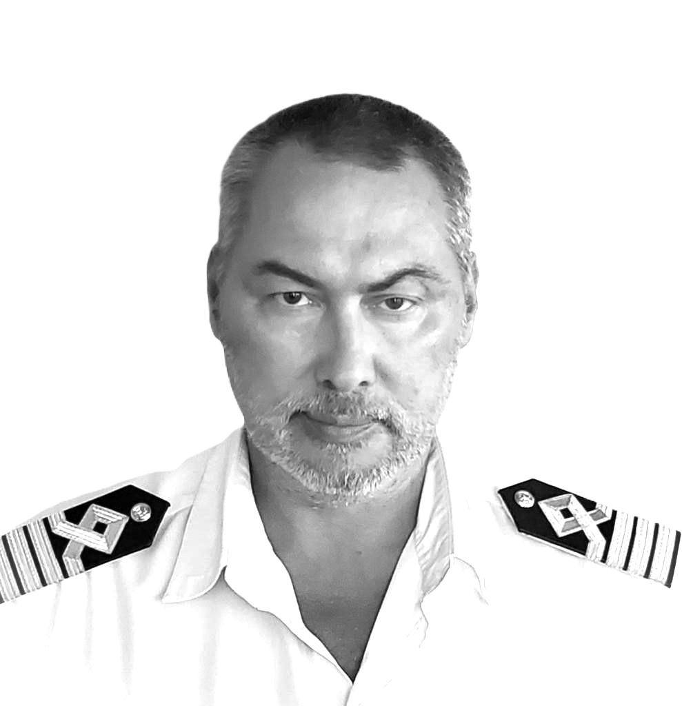

Capt. Oleksandr Shyrokov
| Deep Sea Captain | Harbour Master | Maritime Operations Expert | ISM/ISPS Auditor |
Fleet and Port Management Professional | Web Developer |
| Deep Sea Captain | Harbour Master | Maritime Operations Expert | ISM/ISPS Auditor |
Fleet and Port Management Professional | Web Developer |

Maritime professional with over 20 years of leadership in fleet operations, port management, and maritime regulatory compliance. Extensive experience commanding tankers, bulk carriers, Ro-Ro/Container vessels, and offshore ships, ensuring safety, efficiency, and strict adherence to ISM/ISPS standards.
As Harbour Master of Odessa and Illichevsk Sea Ports, directed vessel traffic and emergency response operations, ensuring efficient port operations and regulatory compliance. Led sustainability initiatives to enhance environmental responsibility and improve port logistics.
At ABC Maritime, played a role in fleet restructuring, ISM/ISPS audits, and vessel lifecycle management, achieving significant cost savings and operational efficiency. Supervised dry-docking, maintenance, and new vessel construction, ensuring compliance with international standards.
With a deep understanding of navigational safety, risk assessment, and maritime regulations, I have successfully collaborated with port authorities, regulatory bodies, and international shipping companies to enhance operational efficiency and regulatory compliance. Skilled in leveraging digital navigation tools, real-time data analysis, and performance optimization strategies, I bring a modern and proactive approach to maritime operations.
Passionate about maritime safety, crisis management, and optimizing global shipping operations. Open to leadership roles in fleet management, port operations, or maritime consultancy where expertise in risk mitigation, regulatory compliance, and operational excellence can drive success.
Odessa Sea Port, Ukraine (Jan 2022 – Sep 2023)
Illichevsk Sea Port, Ukraine (Aug 2020 – Mar 2021)
ABC Maritime, Switzerland (Apr 2007 – Jan 2020)
ABC Maritime, Switzerland (Mar 2017 – Sep 2017)
Acquired in-depth knowledge of ship navigation, maritime safety, cargo handling, and international shipping regulations. Completed extensive training in vessel maneuvering, emergency response, and compliance with IMO standards. Developed a strong foundation in marine engineering, meteorology, and advanced navigation systems, which became the basis for a successful maritime career.
I founded ProShipRouting, a company dedicated to providing professional hydrometeorological ship routing services. By leveraging advanced meteorological data and oceanographic insights, we help vessels optimize their routes for safety, efficiency, and cost-effectiveness. Our services assist shipowners, captains, and fleet operators in making well-informed navigational decisions while reducing fuel consumption and voyage risks.
In addition to leading the company's strategic direction, I personally designed and developed our online platform to ensure a seamless user experience. The website was built from scratch to represent our services and provide essential information for clients, making ProShipRouting a reliable partner in maritime operations.
I have a passion for web development and have successfully designed and built a corporate website using HTML and CSS. I also configured a domain, set up business email, and ensured a fully responsive design. Currently, I am continuously expanding my knowledge of frontend development, exploring JavaScript and modern web frameworks.
Hunting is not just a sport for me but a way to connect with nature. I have extensive experience in ethical hunting, tracking, and firearm safety. Additionally, I enjoy outdoor survival training, navigation, and spending time in the wilderness, refining my self-sufficiency skills in challenging environments.
Excited to connect with professionals in the maritime industry! With extensive experience in fleet management, port operations, and regulatory compliance, I am passionate about advancing safety and efficiency in maritime services.
Let’s collaborate and explore opportunities! Looking forward to connecting with maritime professionals. Let’s discuss how my expertise can contribute to your operations! Contact me via email or visit my LinkedIn profile.